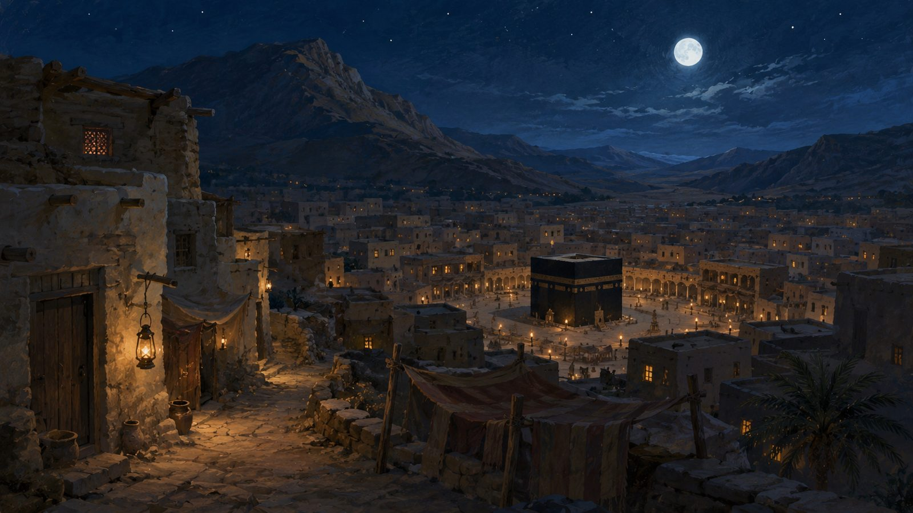
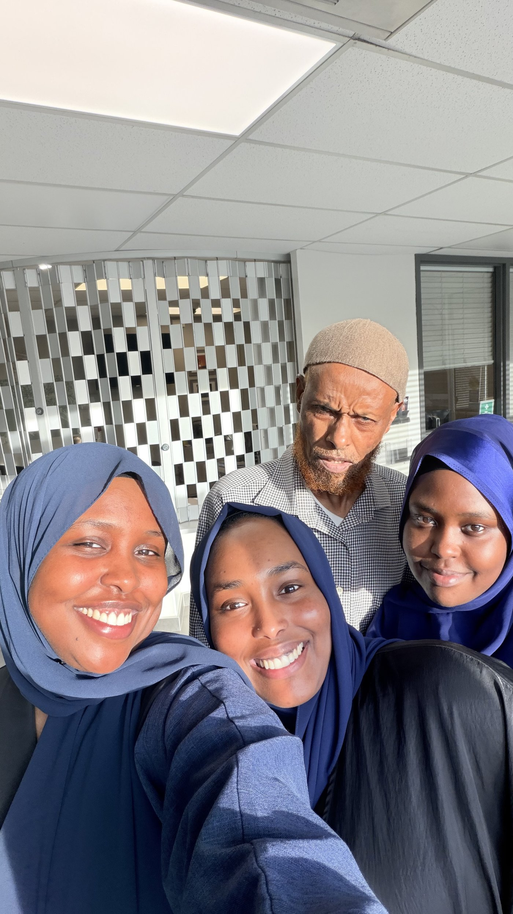

"If one of them were to look down at his feet, he would see us."
"What do you think of two, the third of whom is Allah?"
"Do not grieve; indeed Allah is with us."
"If you were to rely upon Allah with the reliance He deserves, He would provide for you as He provides for the birds."
